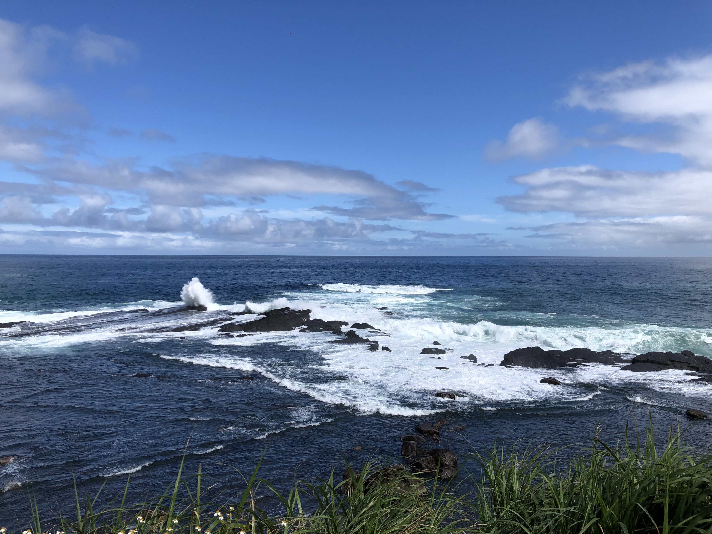
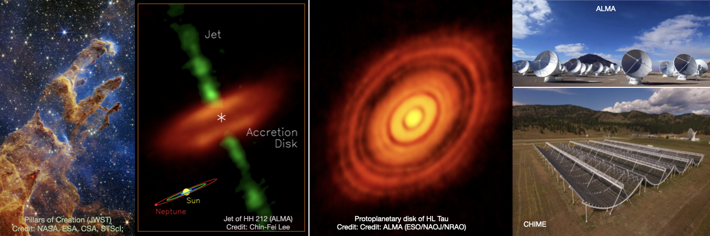

About Me
Welcome to my personal webpage
I am an astronomer, and I work as a support scientist at the Academia Sinica Institute of Astronomy and Astrophysics (ASIAA)
in Taiwan. My main areas of research include star and planet formation, and I use various data collected from telescopes
that observe in submillimeter, radio, infrared, and optical wavelengths.
Recently, my recent focus has been on studying protostellar jets using observations from the ALMA telescope to gain insights
into the jet launching process and young stellar accretion. I study the dust and molecular line emission originating from
the protoplanetary disk, and model the structures to identify potential substructures associated with planet formation.
Additionally, I am involved in the installation, calibration,
and data processing for the BURSTT VLBI project, which aims to detect and localize Fast Radio Bursts (FRBs).

Education and Background:
2023 - present: Support Scientist at Academia Sinica Institute of Astronomy and Astrophysics (ASIAA), Taiwan
2019 - 2023: Post Doc at Academia Sinica Institute of Astronomy and Astrophysics (ASIAA), Taiwan
2018 - 2019: Post Doc at Indian Institute of Science Education and Research (IISER), Tirupati, India
2012 - 2017: Ph.D. at S N Bose National Centre for Basic Sciences, India
Ph.D. Thesis: Multi-wavelength studies on Galactic H II regions
Research Interests:
The birth of young stellar system: outflow, jet, planet
Multiwavelenth (submillimeter, infrared, optical) study of star-forming regions
Observations of interferometer and single-dish telescopes
Radio instrument installation, calibration and data processing
Publications: ADS link!
Language and Skills:
Computer Language: python, C
Language: English (fluent); Hindi/Sanskrit; Bengali(first language)
software: CASA, CARTA, IRAF, TOPCAT, DS9
Contact:
Email: sdutta@asiaa.sinica.edu.tw; duttasomnath9@gmail.com
Address: ASIAA,Taipei 106216, Taiwan, R.O.C.
Research

Project I: Protostellar Jets/Outflows and Planet Formation
Outflows and jets are the most intriguing characteristics of protostars during the accretion process.
They remove excess angular momentum from the disk surface, allowing accreting material to fall onto the star surface.
The origin and characteristics are still unclear. High-resolution and high-sensitivity observations with
Atacama Large Millimeter Array - ALMA in the submillimeter
wavelength provides a robust opportunity to explore the characteristics of the jets. Observations of statistically significant
jets allow drawing a comprehensive picture of the jet's characteristics. A few AU scale observations with higher velocity resolution
allow to measure jet rotation as well as jet-launching radius (ref: ALMASOP project;
Dutta et al. 2020;
2022a;
2022b
&
2024
)
Planets are thought to form within protoplanetary disks at their very early evolutionary stage.
Observations and simulations have indicated possible signs of planet formation within these disks.
However, the exact process and timeline for the beginning of their formation are not yet fully understood,
and further detailed investigation is needed.
We are working on the emission from the dust continuum and molecular line within the disk,
and model the structures to identify potential substructures associated with planet formation.
|
Dense Cores, Molecular Outflow and Jets, the Birth Places of Stars and Planets
|
|
Dense cores are incredible targets for investigating the initial condition of star formation, jet morphology, chemical evolution, and planet formation. To explore multiple goals, we have been investigating a set of dense cores. Slide (1) displays the location of such dense cores in the Orion molecular Cloud Complex. Slide (2) presents examples of continuum emission of different kinds of dense cores. Slide (3) shows examples of outflow emission of already formed protostars within dense cores. Slide (4) shows the chemical composition of Hot corinos within dense cores. Slide (5) displays molecular jets and associated knots for two stars, one of them is the most evolved protostar with a molecular jet. Slide (6) is one of the youngest molecular jets. Molecular jets could be monopolar or bipolar. Slide (7) provides some examples of monopolar jets. Slide (8) shows some examples of bipolar jets.
|
|
|
Copyright©
Dutta et al. 2020
;
Dutta et al. 2022a
;
Dutta et al. 2022b
&
Dutta et al. 2024
|
Project II: Radio Instrumentation and Data processing
First Radio Burst (FRB) has been a topic of immense attraction for the last few years
due to the challenges of their detection and localization. Recently, the Taiwanese FRB community launched a new radio telescope,
Bustling Universe Radio Survey Telescope in Taiwan (BURSTT)
, dedicated for detection and localization of FRBs. Due the technical challenges, I am interested in their localization using very large baseline interferometric (VLBI) observations.
There are several outrigger stations of the BURSTT projects as a part of VLBI observations
Lin et al. 2022.
I am involved in the
installation, calibration and data processing of the telescope with out the BURSTT collaboration.
I am particularly leading one BURSTT outrigger station at
Raman Research Institute (RRI), Bangalore, India.
Project III: Formation of Young Star Cluster
The formation of the star cluster is a topic of considerable interest since most stars in our Galaxy form in groups within clustered environments.
Several environmental conditions can breed young clusters. As molecular clouds are often composed of HIIregions, bubbles, and dense filamentary structures
, understanding what shapes the molecular clouds to be dense and massive enough to form a young cluster is therefore of great interest.
Additionally, the initial cloud configuration decides the future location of cluster formation.
Therefore, the exact role of environment on the star and star cluster formation of a cloud can only be thoroughly understood by tracing various components of the interstellar medium
(ISM) through multiwavelength observations. We utilize multiwavelength (sub-millimeter, radio 1.4 GHz, infrared, optical) observed data to explore the star and star cluster formation
(Ref:
(Dutta et al. 2015,
2018b
)
|
Molecular clouds: Formation of Massive Stars, HII regions, Star Cluster Formation
|
|
Slide (1) displays an example of star cluster 2282.
Slide (2) presents example of star forming molecular cloud G108.37-01.06.
Slide (3) optical spectra of massive stars.
Slide (4) shows the methods of young stellar objects detection.
Slide (5) shows the spacial ditribution of young stars and morphology of the filaments associated with the molecular cloud.
|
|
|
Copyright©
Dutta et al. 2015
&
Dutta et al. 2018
|
Project IV: Time-Series photometry of young objects
Photometric variability is a ubiquitous characteristic of young stars.
In a binary system, two components eclipse one another periodically, resulting in a change in the apparent brightness of the system.
Furthermore, various temporal phenomena such as flare-like activity on the corona, circumstellar disc extinction due to disc asymmetry,
variable accretion rates, etc., can lead to aperiodic variability of young stars. Potentially, variability explores the young stars in the field population.
We performed optical monitoring of young star clusters with optical telescopes
2m HCT, India
1.3m DFOT, India;
1.04-m ST, India)
to explore the variability characteristics of the young stars
(ref:
Dutta et al. 2018a
&
Dutta et al. 2019.
|
Optical Photometric Variable Protostars
|
|
Slide (1) displays our optical observations of star forming cluster NGC 2282.
Slide (2) presents RMS deviation of candidate variable stars in NGC 2282 region.
Slide (3) a few example variable ligh curves.
|
|
|
Copyright©
Dutta et al. 2018a
&
Dutta et al. 2019
|